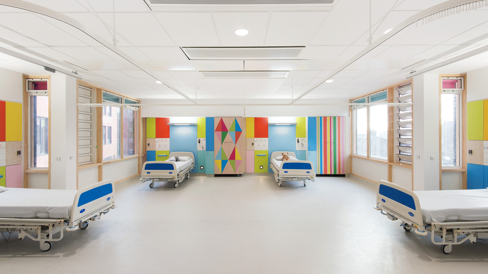
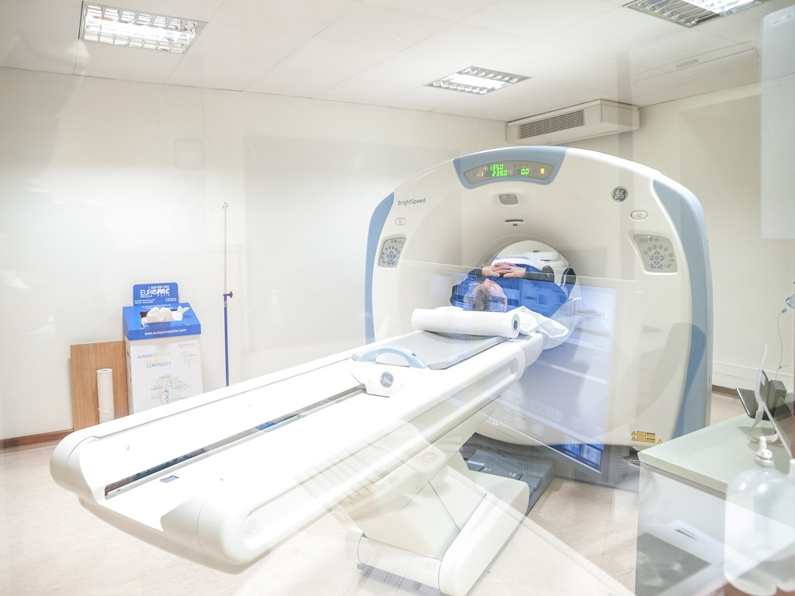
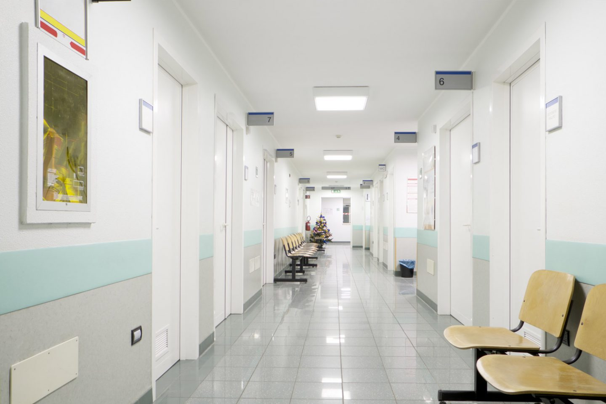

- Agência Transfuncional
- Centro Cirurgico
- Centro Check-up
- Centro de Oncologia
- Clínica de Saúde Mental
- CTI Adulto
- Fisioterapia
- Internação
- Pronto Atendimento
Agência transfuncional é o setor responsável por todo o controle de hemocomponentes e armazenamentos de sangue e seus derivados, contamos também com uma grande diversidade de serviços de testes - transfuncionais , transfusões e testes de tipagem sanguínea que dispõem em escolher a bolsa de sangue mais propícia para seus pacientes. Também dispomos de doações de banco de sangue para outras clínicas,pois a nossa visão é ‘’Cuidar dos nossos pacientes e colaboradores proporcionando uma qualidade de vida melhor e buscando sempre uma integração com a tecnologia’’
O nosso centro cirúrgico conta com a mais nova tecnologia em nossos aparelhos e viabiliza a efetuação de cirurgias minimamente invasivas guiadas por imagem que possibilita o sucesso das demais cirurgias procedidas em nosso hospital e também executamos desde os procedimentos mais simples aos mais complexos como: cirurgias cardíacas, ortopédicas, neurológicas e demais especialidades.A equipe que atua na unidade de centro cirúrgico estabelece uma coordenação com as demais equipes e serviços como, por exemplo, laboratórios, radiologia, banco de sangue, oferecendo assistência adequada às necessidades dos pacientes. Bem equipado, nosso hospital tem uma estrutura com 5 salas cirúrgicas com centro de recuperação pós-anestésico para melhor comodidade do nosso paciente.
O centro de check-up atua com o propósito de aumentar a qualidade de vida de nossos pacientes,contamos um serviços de várias especialidades, em um único só dia você pode fazer o seu ‘’check-up’’ com todo conforto e segurança a fim de evitar e prevenir doenças com um histórico familiar ou apenas para o seu bem estar.
Contamos com consultas com oncologistas espelializados, quimioterapia,reabilitação,pronto atendimento oncológico, diagnóstico por imagem,exames clínicos e patológicos radioterapia,radioterapia e medicina integrativa para o seu melhor tratamento.
Tem a missão de cuidar da sua saúde mental e proporcionar equilíbrio entre as atividades e transtornos da nossa mente como por exemplo crises de ansiedade e mudanças bruscas de humor esquizofrenia entre outros.Como muitos pensam que ‘’saúde mental só cuida quem é louco’’ mas estamos para atender a todo no que precisar mesmo que só queira uma conversa para melhorar o estresse do dia-a-dia.
Composto de duas unidades: UTI geral e UTI cardiológica. CTI Geral é para atendimentos de pacientes com doenças graves ou que foram submetidos a cirurgias de alta complexidade,temos o objetivo de atender você para melhor recuperação.
Voltada para a cura e reabilitação nós oferecemos todo o acompanhamento necessário para o progresso de nossos pacientes,contamos com os mais qualificados profissionais e técnicas específicas de acordo com a complexidade do paciente.
O Blu Vitality conta com um quarto de internação dentro padrões de conforto e necessidade dos pacientes. Temos opções de quartos privados ou coletivos. Entre outra acomodações.
Documentos necessário para a internação:
Do paciente:
Carteirinha do Blu Vitality.
Solicitação da internação.
Todos os exames pré operatório e os referentes.
Se caso tiver convênios comparecer com a carteirinha na recepção
A nossa unidade de pronto atendimento conta com uma complexidade implantado em Blumenau,Santa Catarina para atuar em situações de urgência e emergência.Por isso que no pronto-atendimento você encontra toda a infraestrutura necessária e o aconchego que nossa equipe dá a você nesses momentos difícil, procuramos sempre reduzir o tempo de ser atendimento para agilizar consideravelmente uma melhor recuperação.

O funcionamento do coração pode ser avaliado por uma grande diversidade de exames, cada um com as suas funções, que são escolhidos pelo cardiologista ou clínico geral de acordo com cada caso.
Exames realizados:
Cintilografia do Miocárdio
Ecocardiograma
Eletrocardiograma
Holter
M.A.P.A.
Teste Ergométrico
As radiografias proporcionam informações importantes para a decisão dos futuros passos de diagnostico, um tratamento ou acompanhamento de um procedimento. Então, o nível necessário de qualidade de imagem para o correto diagnostica tem que ser obtido na mais baixa dose de radiação possível ao paciente.
Este exame é comumente solicitado para diagnosticar ou tratar doenças que atinjam o sistema digestivo alto, que podem apresentar sintomas como: dores abdominais persistentes, náuseas, vômitos e/ou dificuldade de deglutição. Esse exame também pode ser requerido para a retirada de objetos que possam ter sido engolidos acidentalmente ou, ainda, pode ser utilizado para a realização de biópsias da mucosa do esôfago, estômago ou duodeno, a fim de detectar doenças e condições.
Os exames laboratoriais são uma série de exames ou testes indicados pelo médico ou em laboratórios de análises clínicas, afim de diagnosticar ou atestar uma doença. Eles também podem ser utilizados para a realização de exames de rotina, conhecidos como check-up
Exames realizados no hospital:
Colesterol
Glicose
Hemácias (glóbulos vermelhos)
Hemograma
Leucócitos (glóbulos brancos)
Plaquetas
Ureia e Creatinina

Tudo começou a partir da dificuldade em atender as pessoas por um meio de comunicação além do telefone, sentimos a necessidade de ter um contato e acompanhar nossos pacientes por mais perto,para proporcionar todo o conforto dentro do seu lar.No começo nossa equipe era formada por apenas 5 pessoas que que trabalhavam apenas em um pequeno consultório médico que passou por várias dificuldades,mas em 2018 inauguramos o nosso primeiro prédio,ainda assim conquistando essa vitória percebemos que podemos ir mais longe só um prédio físico não era o bastante para transformar e salvar vidas,não parando por ai, nossa equipe buscou o'que tem de mais novo na tecnologia de tratamento e exames e esse é o nosso diferencial, hoje além de um prédio com grande infraestrutura também contamos com a tecnologia de ponta.
Missão:
‘’Cuidar dos nossos pacientes e colaboradores proporcionando uma qualidade de vida melhor e buscando sempre uma integração com a tecnologia".
Visão:
"Ser um hospital de referência em tecnologia e inovação".
Valores:
-Respeito acima de tudo
-Credibilidade com as vidas
-Sustentabilidade
-Confiança
-Cuidado com a segurança do paciente
